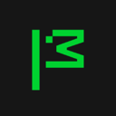

Windows-MCP
Lightweight MCP server for computer use on Windows that lets agents navigate files, control apps and interact with the UI.
✨ Try AgentScout's free AI image generator →Good for: browsing the web, controlling a computer, automating workflows, connecting tools with MCP, building MCP servers
Use cases
About Windows-MCP
Windows-MCP is listed in our browser/computer use category and is aimed at builders. Lightweight MCP server for computer use on Windows that lets agents navigate files, control apps and interact with the UI. Pricing, as the maker states it: Open source. Maturity: Mature. We last checked the official link on 2026-10-18.
Windows-MCP at a glance
- Category: Browser/computer use
- Built for: Developers and teams building with AI agents
- Pricing: Open source (as the maker states it)
- Licence: MIT License (OSI-approved open source)
- GitHub: CursorTouch/Windows-MCP · 9,431 stars (as of Oct 18, 2026)
- Latest release: Release v0.8.8, Oct 10, 2026
- Last commit: Oct 16, 2026
- Official site: github.com/CursorTouch/Windows-MCP
- Listed on AgentScout: Oct 18, 2026
Windows-MCP FAQ
What is Windows-MCP?
Lightweight MCP server for computer use on Windows that lets agents navigate files, control apps and interact with the UI.
How much does Windows-MCP cost?
Windows-MCP's pricing, as the maker states it: Open source. Open-source tools are free to use, though you may still pay for model API usage or a hosted plan. Check the official site for current plans.
Is Windows-MCP open source?
Yes. Windows-MCP's GitHub repository is published under the MIT License, according to the licence file in the repo.
Where can I find Windows-MCP's source code?
On GitHub at CursorTouch/Windows-MCP, which had 9,431 stars as of Oct 18, 2026. The latest release is Release v0.8.8 (Oct 10, 2026).
What are alternatives to Windows-MCP?
Other browser/computer use tools on AgentScout include Browser Use, Scrapling, Crawl4AI, Chrome DevTools MCP, UI-TARS-desktop.
Facts from our link-checked listing, the GitHub repository and the official site. See something wrong? Suggest an edit.
Windows-MCP ratings and reviews
Windows-MCP alternatives
Other browser/computer use tools in our directory. See all browser/computer use tools →
webclaw
Rust web extraction tool that turns sites into clean Markdown or JSON for agents, as a CLI, MCP server and REST API, with a hosted API.
Chrome DevTools MCP
Official MCP server that lets coding agents control and inspect a live Chrome browser through DevTools for debugging and performance work.
Terminator
Desktop automation library and MCP server that lets AI assistants control any Windows app through the accessibility tree, like Playwright for the desktop.
Playwright MCP
Microsoft's MCP server giving agents browser control via Playwright.
UI-TARS-desktop
ByteDance's open-source multimodal agent stack, including a desktop app and Agent TARS for controlling computers and browsers.

Firefox DevTools MCP
Mozilla's MCP server that lets AI agents browse with Firefox and inspect pages with its developer tools over WebDriver BiDi.
Popular searches with this tool
🏆 Ranked in: Best MCP servers for Cursor · Best MCP servers for Codex
🔁 Listed in: Chrome DevTools MCP alternatives · Playwright MCP alternatives · UI-TARS-desktop alternatives
🧭 Task guides: Browsing the web: computer and desktop control
Badge for makers
Built Windows-MCP? Add this badge to your README or site. It links back to this page. About badges